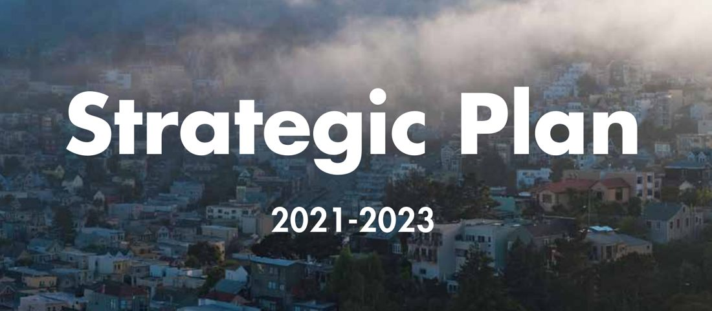

Executive operating partnership
Organization-wide strategy, resource allocation and executive alignment
- The challenge
- Translate citywide priorities into a focused strategy, operating plan and budget for the department.
- My role
- Served as senior operating partner to the department Director.
Explore the project: Executive operating partnership
Strategy and my role
Served as senior operating partner to the department Director, translating citywide priorities into strategy, operating plans and executive communications.
Strategic plan
Led the 2021–2023 Strategic Plan and aligned organizational and board leaders on priorities and KPIs.
Budget and operating rhythm
Aligned budgets to strategy through forecasting and resource allocation; ran reviews and reporting that tracked milestones and prompted follow-up.